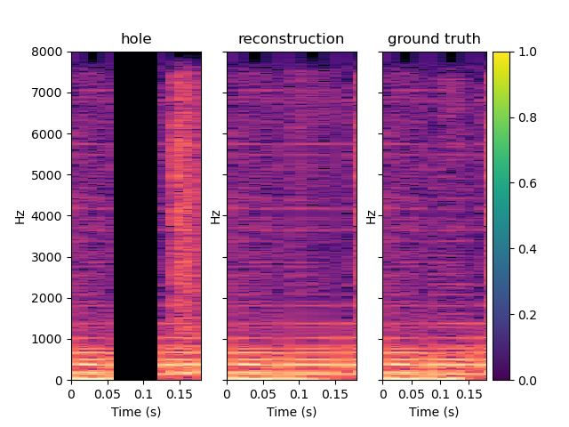
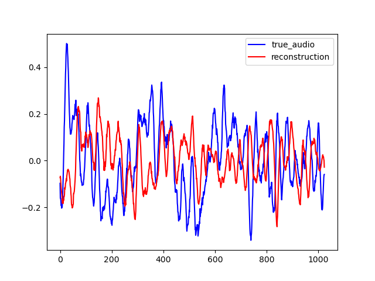
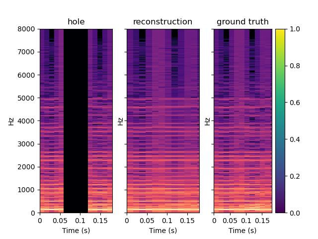
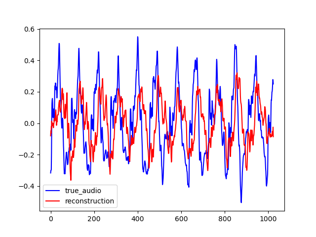
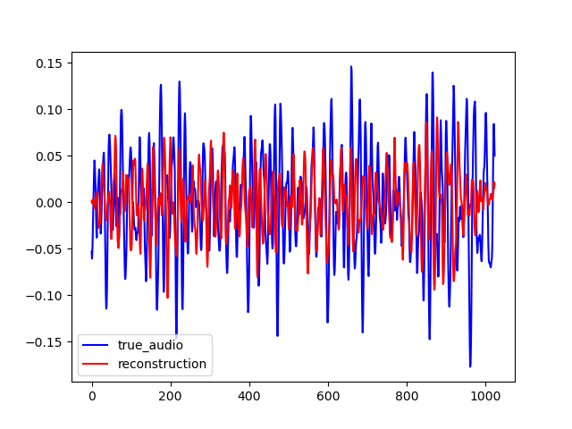
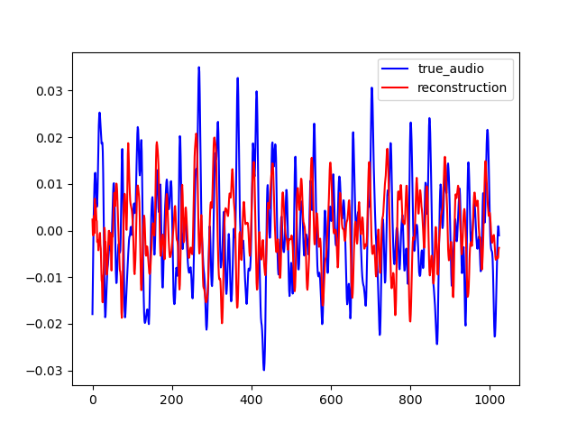
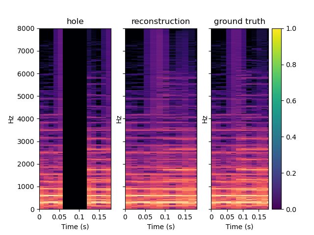
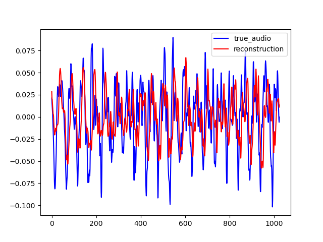

InpaintingGAN, IGAN in short, is a neural network to inpaint magnitude spectrums. It can be trained to inpaint the magnitude spectrum of an audio frame of length T seconds, given the previous and subsequent T seconds. PredicitonGAN or PGAN is an adaptation of IGAN to perform audio prediction. It can be trained to predict an audio frame of T seconds, given the T previous seconds. This web page accompaing the github repository.
Here are some samples output by IGAN for T=0.064. To reconstruct the audio from the magnitude spectrums, the Griffin-Lim algorithm was used. As shown in the various examples, the reconstructed spectrums are rather good, even if they are blurred. On the other hand, the audio waveforms look similar to the ground truth even if they are not close from them. This is explained because the Griffin-Lim does not output the exact waveform, even if it is fed with the real magnitude. Moreover, it works from an approximation of the real magnitude spectrum. To obtain this result, IGAN was trained for 200 epochs on the small FMA dataset. The network performance can be probably improved by letting it train longer.
| Spectrum | Waveform |
|---|---|
|
|
|  |  |
|  |  |
| Original Audio | Reconstructed Audio |
|---|---|
Here are other sample for T=0.128
PGAN is an adaptation of IGAN for audio prediction. The neural network predicts the magnitude spectrum of an audio frame of length T given the T previous seconds.
On the examples below, one can see that PGAN perform less well than IGAN. It is because the new task is much more challenging. However, the result are still interesting.
To perceptually evaluate the model, we use it to fill in one gap of T = 0.064s, located at 0.5s in an audio sample of two seconds. Then, we run a matlab function to compute the ODG between the original audio and the audio with the filled gap. The example below are obtained with IGAN with T = 0.064.
On the first and last example of this section, one can heard that IGAN does it job. Indeed, it is very difficult to heard a difference between the original and the reconstructed one while the difference is audible between the original audio and the one with the hole. In the second example, it is difficult to heard a difference between the original audio, and the one with the hole. This is probably because the hole come when the song is rather silent. Still, we can notice that IGAN doesn't put annoying noise instead of the silence.
| Original Audio | Reconstructed Audio | Audio with hole |
|---|---|---|
To test our model generalization ability, we used it to inpaint on the MAESTRO dataset while training it on the small version of the FMA dataset. The FMA dataset is composed of 3000 tracks of 30s of 8 different music styles while the MAESTRO dataset is composed of classical piano records. The example below are obtained with IGAN with T = 0.064. When comparing these examples with the one shows previously, one can see that IGAN behaves in the same way in both case. Thus, the model generalization ability seems to be nice.
| Spectrum | Waveform |
|---|---|
|  | |
|  | |
|  |  |
| Original Audio | Reconstructed Audio |
|---|---|
"Enabling Factorized Piano Music Modeling and Generation with the MAESTRO Dataset." , Curtis Hawthorne, Andriy Stasyuk, Adam Roberts, Ian Simon, Cheng-Zhi Anna Huang, Sander Dieleman, Erich Elsen, Jesse Engel, and Douglas Eck. In International Conference on Learning Representations, 2019.
A Dataset for Music Analysis, Defferrard, Michael and Benzi, Kirell and Vandergheynst, Pierre and Bresson, Xavier. In 18th International Society for Music Information Retrieval Conference (ISMIR)